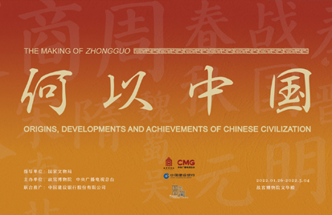

发布者：故宫博物院发布日期：20##-##-##阅读数：896
在与自然万物频繁互动中，先民们将对世界的观察、对族群的体认，化金木水土为各式美器，百业俱兴，生作始焉，中华之魂由是发轫。至春秋战国之际，生产力巨变，生产关系鼎革，历史风云际会，学说百家勃兴，空前的思想激荡与制度探索由此展开。以人为本、天人合一、道法自然、自强不息、和而不同、天下为公的民族性格和统一多民族国家的制度建构，由是奠基！
流，集多源之水。凭藉涓滴，方成川甽。中华文明之流，亘古及今，延绵不绝。漫长的岁月中，在域内各民族间的一次次水乳交融里，中华民族的范畴不断发展与丰富。在与域外文明的一次次辉映互鉴下，世界认识了中国，中国也倾听了世界。在与自然万物的一次次对话互动中，中华民族不断更新对宇宙的认知、调整与环境的关系，凝练出天、地、人合一的东方智慧。历经数千载的积淀与传承，中华文明的步伐日益坚定，流向与时俱新。凭仗历代先贤的智慧、自然造化的瑰丽，中华文明在构建中华民族共同体、人类命运共同体、地球生命共同体的道路上奋勇前行。汇，拢万流于一处，成百川之渊薮。福泽广布，济世安民。泱泱中华，万古江河，中华文明凭藉以和为贵的和平性格、海纳百川的包容特质、天下一家的大国气度，终汇成崇民本以固金瓯、惠民生以格万物、聚民智以成典籍的浩荡洪流。这些由人民创造、为人民享有、被人民传承的精神、技艺与经典，不仅是中华文明的灿烂瑰宝，也为人类文明进步作出不可磨灭的贡献。
泱泱中华，万古江河，晨禹迹而暮朝歌，泽丰镐而卫河洛。取九原之殊勇，舞南越之金戈。融南北之血脉，混东西为一科。 “何以中国”，实为中华民族之永恒命题。展厅之内，重器凝万古之志，典籍汇千载之思。精工绝艺，融通中外。天地造化，入我胸怀。此即万千年以来，我百世祖先同心书写之答案。展厅之外，国家强大坚毅，社会生机勃勃，科技日新月异，人民幸福安康，此即百余年来，无数志士先驱以青春、汗水、生命与信仰砥砺铸就之答案。今天，面对百年未有之变局，值此民族复兴的关键时期，站在“两个一百年”奋斗目标的交汇点上，我辈更当以史为鉴、开创未来、埋头苦干、勇毅前行，为后世中华子孙，留下 “何以中国”的时代答案。当后人回望我们的事业时，希望能一如我们凝视前人的成就一样，满怀自豪地说出：“这，就是中国！”